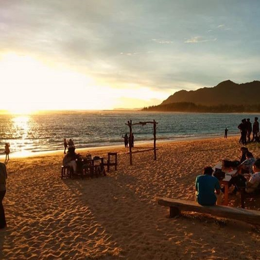
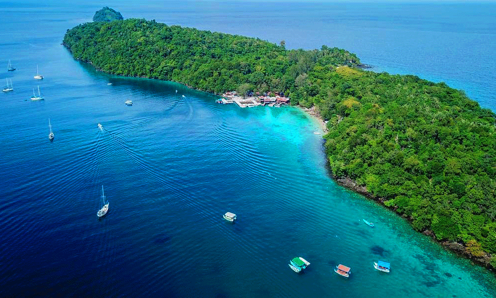

Aceh
-

Mesjid Raya Baiturrahman
-

Sunset Surf
-

Sabang
Terletak di bagian paling barat Pulau Sumatra, Provinsi Aceh memiliki posisi strategis karena menjadi pintu gerbang lalu lintas perniagaan dan kebudayaaan. Daerah ini juga mendapat julukan Serambi Mekkah karena agama dan kebudayaan Islam berpengaruh besar dalam kehidupan sehari-hari masyarakatnya.